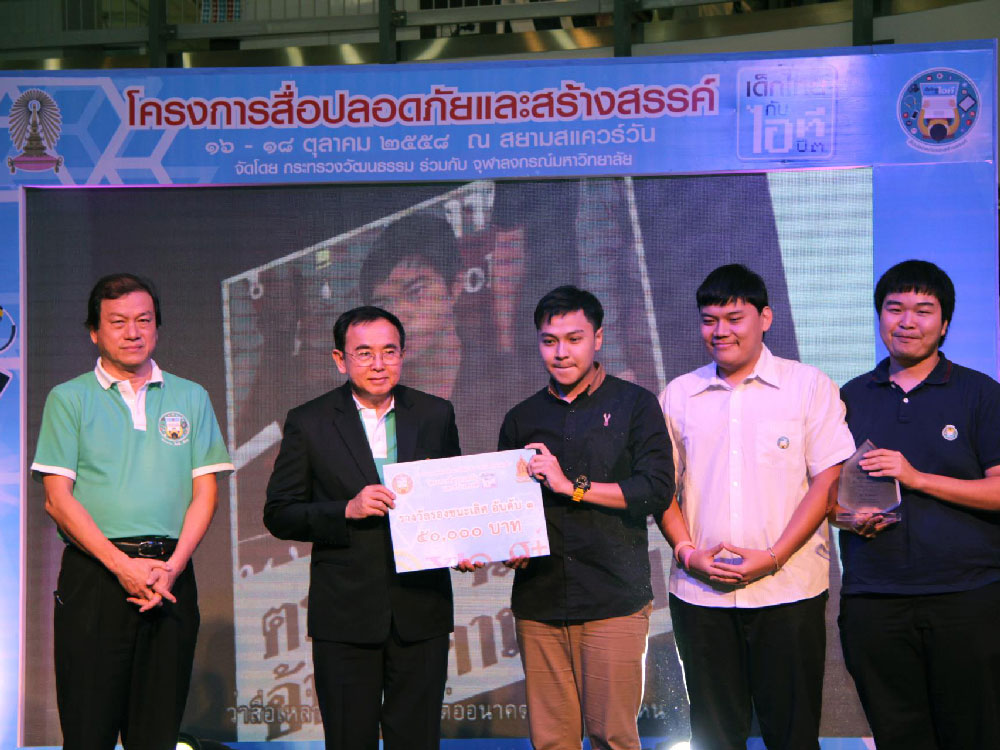
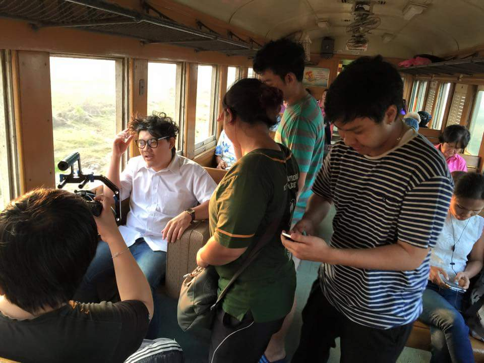

{Journey}
{Journey}
-

- 
- 
-

"Select any event for seeing untold story"
2013
Digimon Media Production
Actually, I love to work with my classmates, hence we formed our team and named it "Digimon Media Production". We did several projects, but animation and live action video were our favored. In addition, we practiced both from class and outside, especially from tutorials and interning, and we loved to join the competition, our objective is to develop ourselves. It challenged us, and there was a lot of experiences we gained.
JSL Young Creative
Unforgotten memory. In that year, JSL Global Media opened their studio and chosen 13 college students to stay and learn with them for 10 days. My eyes opened! Every knowledge that I had ever known, it mostly different, especially the attitude. Something I thought it was right, it was not. JSL corrected my mind. I gain the next-level skills from this family.
Dek Thai IT 1st - Semi-Final Round
My very first contest stage in my university life. With that time skill, we make a short film with our messy production. The funny part is there were a lot of problems ran to us, so we could deal with them by using our beginner-level skill, and it worked! Finally, we got into the semi-final round and got a precious opportunity to have a presentation in front of judges at Bangkok.
2013
2014
2014
RMUTSV Studio Photo Contest - 1st Runner Up Award
My friends and I grouped together and joined Studio Photography Contest. 3 artists, and 1 beautiful model, it was really tense, because we had limited time with unused equipment. Finally, I did some mistake while shooting. So feel sorry to my teammate, however, we got the second place!
Jenesys 2.0 - Exchange Program
Participating in Jenesys 2.0, a Japanese exchange program, supported by the Japanese government. The objective was to stay with a Japanese family, and learn culture, life, and experiences from them. Moreover, all of the members who joined this program were media student from various university. Most of them are senior, hence I saw what they did, and how they achieved. This trip full filled my fuel.
2015
Yggdrazil Studio - Cooperate Education
Time to upgrade! Yggdrazil is the Thai well-known post-production studio located in Bangkok. Luckily, I receive priceless opportunity to do an internship in this studio for 4 months. Just say this place gave me plentiful experiences and skills. By being a provincial media student, there was something that I could not find in my area, hence I gained and asked as much as I could from professionals under the real situation. Moreover, this was one of my turning point which I started to walk in the animator part. Let's move!
Dek Thai IT 3rd - 1st Runner Up Award
And again, we came back for proving ourselves after losing two years ago. My friends and I spent after interning- time on this animation project. Very tired, but excited. Finally, we were invited to give a presentation to the audience at Siam Square One, Bangkok. Our animation received lots of positive feedback, however, second place was what we got. I thought because the winner's presentation was better than us.
The Style Moving Challenge - Live Animation Battle
Then, my friend and I registered in the animation contest again, but another stage. This stage was held by "The Style by Toyota" at Siam Square One. The contest was a real-time animation competition. 16 Teams drew would face with another competitor in a tournament. The mission of this competition was to create short-looped 2d animation within 1 hour, then the judges would give a decision. We practiced making an animation in a limited time for 1 week. Our bad, we lost in the first round. I remembered that at that time we were truly disappointed. We carried our PCs, not laptop, and called a taxi to pick us up from Lad-Phrao to Siam. Every sight stared at this awkward teens who carrying the black metal box. The situation went down after our defeat. Just like Will Smith carrying an X-ray machine in "The Pursuit of Happyness". The difference was we were not evicted from our apartment!
Kid Animation - Outstanding Award
I-TIM was my last animation for the contest while staying at Yggdrazil. I teamed up with three of my friends. Bigger production, better animation. We intended to send it in animation contest for 3-10 years kids. We spent much time on a story, because we were not kids anymore, thus the objective was to understand them and deliver useful and safety content to them. Our cute animation got an outstanding award.
KaoNgai Studio - Internship
After saying goodbye from Yggdrazil, I still had one month left for the internship period, thus I decided to move to the north. KaoNgai Studio is a warm and joyful house established by Chiang-Mai media graduate in their hometown. At first, I came with intention, pressure and a bit ego. I thought that I was good enough to carry on with myself. However, sometimes, too much on something did not work. On the last day, I learn an important lesson from my senior that it was no need to came here if I did nothing different. It was almost meaningless if I did not spend time with the surrounding. Anyway, I really enjoyed this family. Hope to be back there.
2015
2016
2016
IMMA Festival - Invited Artist
IMMA Festival was held by Multimedia University, Malaysia. Fortunately, my college had collaboration with this international institute, hence they gave my classmates and me a precious chance to travel to Kuala Lumpur, and join this festival as an invited artist. In addition, there were other artists from China and Indonesia. I was very excited because most of the projects in this showcase were interactive media. Their media was integrated with their own culture, and attitude then delivered an innovation that was a solution to their social problem. This event inspired me beyond.
Degree Shows - Live Presentations Round
This event was created for finding the best student's final project in various major, hence we sent our final animation project "The Last Ingredient" to this festival. Then, I flew to Bangkok, and gave a presentation to the professional judgment from the animation industry. In a short duration, I faced various great work from other university students. Indeed, they were genius.
Thailand Animator Festival 4 - Great Animation Projects
Our thesis "The Last Ingredient" was chosen to be one of the great animations in Thailand Animator Festival and exhibited in the festival in Bangkok. Although this animation did not enter into the final round, it was a great thing to see that there were someone saw and interested in our work.
WEON Exhibition
Finally, I arrived at the end and beginning of my teenage life. WEON Exhibition was the last thing that my classmate and I did in college life. At that moment, my mind really fluctuated like the stock market graph. We dealt with lots of problems, planned huge things to do, and spent our time and strength on this last project. Everything was going well. We received both positive feedback and suggestion. Of cause, the main purpose was to present our unknown works and institute to an outside audience, but this meant more. I was really grateful for our teamwork, especially my juniors. It was a long day since we did something together.
DigiCon6 Asia - Audience Award
Digicon6 is our very first and the only one award from an international festival. My friends and I had a chance to work with the juniors in my college. We spent our time after finishing final thesis on this project. At first, because our juniors did not know the processes of animation making, hence we had to work harder. At that moment, I acted as a team leader, so this gained my pressure as well. Finally, we got an audience award! In addition, I got an opportunity to be a representative of our team to join the ceremony in Tokyo, Japan. I was so proud of us, especially my juniors, that I could share our work with others and exchange the experiences together.
2017
TIX3 Studio - Freelance
After graduation, I looked for an animator job at Malaysia and Singapore, but I did not pass their standard. Then I turned my focus on my area. I had some friends who still stayed in Hatyai, hence we discussed together for establishing our team again, and working in our hometown as a freelance studio under the name "TIX3 Studio". Our studio mainly worked in video and animation field according to our skills. Unfortunately, TIX3 stood for 6 months. There was something new we would like to learn and try, hence it was better to make this decision. Anyway, this period gave me lots of experiences. I was pushed to face with a real client and hard situation, not the lecturer anymore. We managed our timeline under an estimated budget and scope. From Wedding presentation, Surprise proposal, to dental animation, they extremely challenged us.
Salted Egg Product Experiment
Do you believe if I tell you that there was a moment which I made not only media but snack!? Back to the beginning, one of my close friends dreamt to create his own product. Coincidentally, there was a food trend occurred in Singapore. Salted egg was really insanely popular. Every menu, from fried chicken to ice cream, in this town, was flavored and seasoned by salted egg. In addition, salted egg flavored snack was very successful, thus my mentioned friend intent to adopt this viral to his brand. He asked me and others to join this project. By assisting from university researchers, we made a salted egg product. It was a tough time because we did not have any production knowledge, hence the best thing that we could support the researcher was brand image and design. Finally, this project was disbanded for some reasons, but I did not regret what I had done. Although it did not achieve, It was really funny and priceless memories. We flew to Singapore for talks with the salted egg product owner, drove to Bangkok for selling our product in a food festival, and traveling to Surat-Thani for visiting duck farm.
2017
2018
2018
Chatthong Property - Training
After walking out from TIX3, my friend and I applied for a marketing trainee in Chatthong Property, a real estate company located in Songkhla. At first, I would like to learn about business according to a recent product experiment, and I was also interested in the technology business, hence I thought that it was better to start from this point. I stayed with Chatthong for 4 months. Responsibilities under my scope were supporting the marketing staffs and house sellers both in general job and media content creator. I gained important knowledge and experience from this place. I acted like a normal staff, faced with several types of customer, and analyzed the marketing strategy. The chairmen and seniors taught me how to responsible for our action.
Techjam: Design Squad - Southern 2nd Runner Up Award
Nothing has to thought twice when I saw the promotion of enrollment to Techjam, the project by Kasikorn Business-Technology (KBTG). Techjam was a real-time competition about technology topic finding the winner from 3 topics (Code, Data, and Design). My friend and I teamed up and registered in Design squad. At first, we thought that the contest would be about interface designing or something about graphic. On the competition day, it was completely different from our imagination. The challenge was about problem-solving. We had to design the solution for each mission, hence it was harder than just designing, but it was better. Our idea did not frame from any judges or rules. At the end of that day, we got the third prize of the southern stage. Really proud of it!
Techjam: Design Squad - Final Round
Just a normal day in my life. Suddenly, Techjam staff called me that my team was selected to join the final round in Bangkok. I was extremely surprised! In the final, the challenge was definitely different from the southern round, and there was only one mission, and we had to present it in the evening on the same day. The goal was to design the future business model from the banking business by using existing resources. The most difficult part was the example of clients. They were invited to give a personal interview with us. Target insight was the information that we had to analyze and adapt to designing an innovation. I was very tense and excited at the same time. In conclusion, my team missed the prizes. However, this was a valuable opportunity to meet with other specialists, and listen to their attitude.